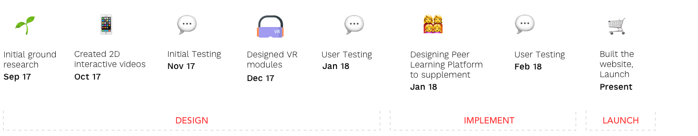
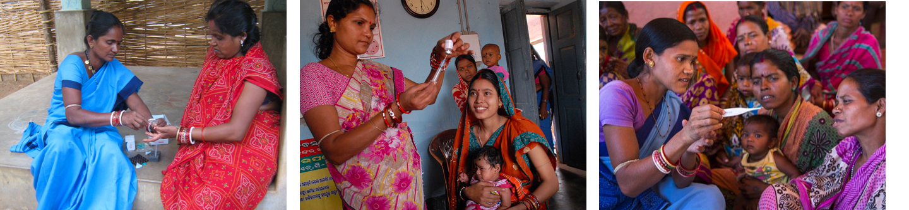
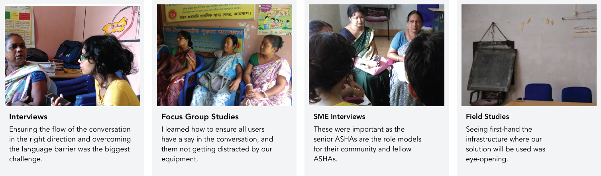
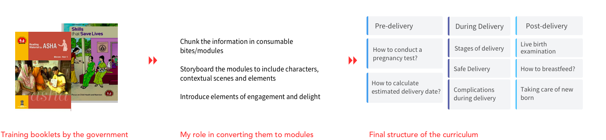
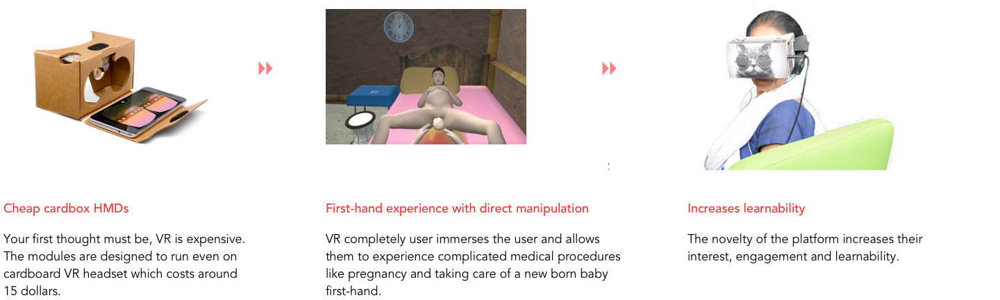
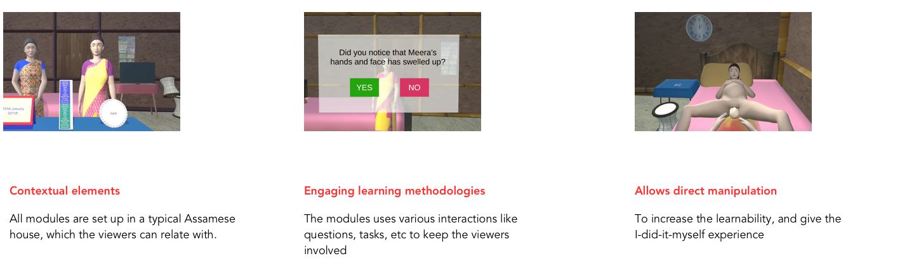

CASE STUDY
Introducing Virtual Reality for the next billion
Training Modules for rural community health workers in India
WHY PRAGATI?
The state of Assam in India has the highest maternal mortality rate in India. More than 237 women die out of 1,00,000 during pregnancy or birth.
Community health workers are their primary (often only) point of contact.
Pragati complements the existing health care ecosystem and helps to develop and improve relevant skill set among health workers.
Pragati is a mobile-based peer learning platform for community health workers:
• to create, learn and share contextual learnings within the community.
• to view interactive, and memorable training modules in VR, as 360 degrees and 2D videos
• to create, learn and share contextual learnings within the community.
• to view interactive, and memorable training modules in VR, as 360 degrees and 2D videos
Impact so far
As a pilot, Pragati is launched in two districts in Assam. In the first 40 days of trial, the response has been very encouraging.
My Role
I was the only designer on a team of researchers, and developers. I was involved right from the beginning, through various phases as our product evolved.

Who are ASHAs?
Accredited social health activists (ASHAs) are community health workers instituted by the government of India. The plan is to have "an ASHA in every village”, and a total of 870,089 ASHA workers were reported in July 2013 in India.
ASHAs are the primary contact for villagers. They are respected role-models of the community and take care of common diseases and pregnant women.
ASHAs are the primary contact for villagers. They are respected role-models of the community and take care of common diseases and pregnant women.

User Research
We visited the rural districts of Assam to conduct field studies. The biggest barrier for me as a designer was the language. While we had translators, but you have to establish the trust factor in them solely through your actions and body language to get them to share their real stories.

Affinity Mapping and Persona
Next step was to codify all that data we had gathered on the field. We coded them into snippets and sorted them to discover the major themes.
Challenges and Defining the Goals
Months of user research and literature study helped us identify key challenges and define user goals.
Structuring and Designing the Training Modules
Divinding the huge 6 booklets into small consummable modules was our next big challenge. It took us almost a month to come up with a structure and creating storyboards for all the modules.

Why VR?
Studies show VR can help recall, mainly because of “apple-to-apple” comparision while training and actual practice.

Design Process for Virtual Reality
We followed a detailed design process, led by Dr Keyur Sorathia. Here is a brief description of the steps and decisions we took.
Novelty factors of Pragati
The concept and design of the modules is very unique. It is very contextual and inclusive, targetting our audience.

Launch
The team led by Dr.Keyur Sorathia recently launched our initiative "Pragati" in Sonitpur and Bishwanath district in Assam. We conducted training and workshop sessions with around 400 rural health workers. The training was conducted to explain to them the methods of its field usage and maximum impact in uplifting maternal and child healthcare.
How did we ensure ASHAs actually use Pragati?
Sure, the modules are engaging and new. What happens after they see it one? What happens after they see it once?
We realized we needed to create a habit amongst our users of continuously learning and also learning together. That is how we decided to shift our focus to a peer learning platform. I will put up a case study for that soon.
We realized we needed to create a habit amongst our users of continuously learning and also learning together. That is how we decided to shift our focus to a peer learning platform. I will put up a case study for that soon.